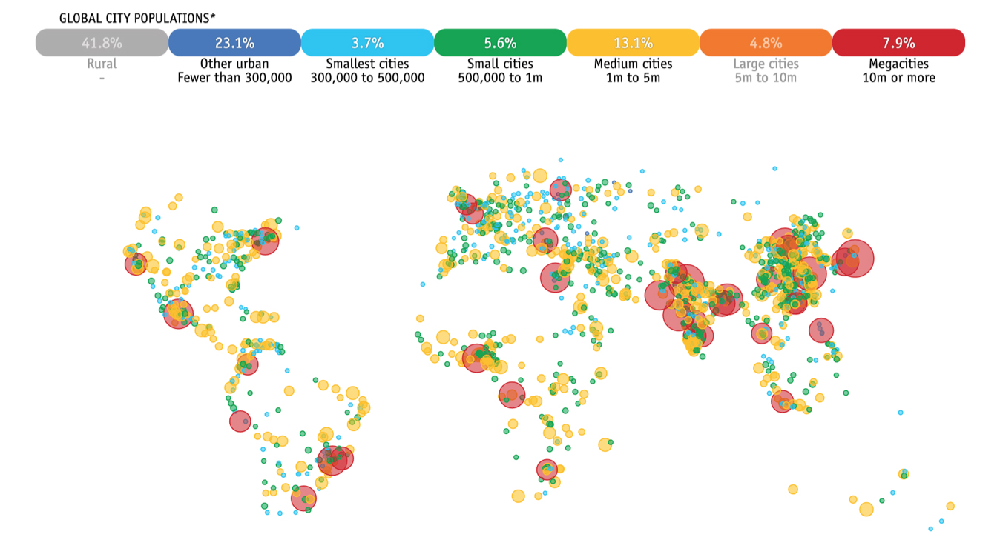

Comparative genomic analysis of flaviviruses using Flavivirus-GLUE
Arthropod-borne flaviviruses such as Zika virus (ZIKV), Dengue virus (DENV), and yellow fever virus (YFV) are the causative agents of large-scale outbreaks that result in millions of human infections every year, while the bloodborne hepatitis C virus (HCV) is a major cause of chronic liver disease.

Projected urbanisation in 2027 (from The Economist magazine). The growth of mega-cities in tropical and semi-tropical regions presents a challenge to controlling the spread of mosquito-borne flaviviruses. Comparative genomic analysis can help reveal the biological basis of flavivirus replication, directly informing efforts to limit flavivirus-associated disease.
Comparative genomic approaches can be used to reveal the structural and functional basis of flavivirus adaptations, such as the capacity to replicate in both arthropod and vertebrate hosts. Flavivirus-GLUE can be used to perform comparative genomic analysis of flaviviruses in an efficient, standardised and reproducible way.
This page provides background information on the virus-associated data items included in the project - information about endogenous flaviviral elements (EFVs) can be found here.
NOTE: those specifically interested in hepatitis C virus (HCV) may want to investigate HCV-GLUE and NCBI-HCV-GLUE. These GLUE projects were developed specifically for HCV and incorporate a graphical user interface (GUI) that allows users to browse and interrogate the underlying GLUE database via 'point-and-click' methods. The MRC-University of Glasgow Centre for Virus Research hosts an instance of the GUI version of HCV-GLUE.
Sequences and associated data
The sequence data in this project are organised into multiple distinct sources. Each source contains data in either GenBank XML or plain FASTA format. The type of data is indicated by the name of the source (all GenBank XML sources contain 'ncbi' in the name).
GenBank XML files are imported into this project directly from NCBI GenBank using a GLUE module and are uniquely identified within this project by their GenBank accession numbers. Where possible, we prefer to use sequences obtained via GenBank since it represents the principle source of published nucleotide sequence data. However, FASTA sources can also be used in GLUE, making it straightforward to expand the curated, GenBank-derived set with unpublished sequences.
Currently this project includes only one NCBI-derived source - ncbi-refseqs: It contains the reference genome sequences (one per flavivirus species) used in this project.
Sequences included in this project are linked to auxiliary data in tabular format.
Flaviviridae reference sequences
We defined a 'master' reference sequence to represent recognised flavivirus genera/subgenera, as follows:
Genus Flavivirus
- Mosquito-borne flavivirus group 2: Yellow fever virus 1 (NC_002031)
- Mosquito-borne flavivirus group 1: Dengue virus 1 (NC_001477)
- Tick-borne flaviviruses: Powassan virus (NC_003687)
- No-known vector group 1: Apoi virus (NC_003676)
- No-known vector group 2: Sokuluk virus (NC_026624)
- Dual-host insect-specific flavivirus group: Lammi virus (NC_024806)
- Mpulungu flavivirus group: Mpulungu flavivirus (LC582740)
- Classical insect-specific flavivirus group: Kamiti river virus (NC_005064)
- Crustacean flavivirus group: Crangon crangon flavivirus (MK473878)
Other Flaviviridae genera
- Tamanavirus: Tamana bat virus 7 (NC_040562)
- Jingmenvirus: Jingmen tick virus (NC_040562)
- Pestivirus: Bovine viral diarrhea virus 1 (NC_040562)
- Pesti-like 1 (PL2): Soybean cyst nematode virus 5 (NC_024077)
- Pesti-like 2 (PL2): Shuangao lacewing virus 2 (NC_040562)
- Hepacivirus: Hepatitis C virus (NC_004102)
- Pegivirus: Human pegivirus 2 (NC_027998)
We explicitly defined the locations of genome features on master reference sequences using GLUE commands (see here).
Multiple sequence alignments (MSAs)
Multiple sequence alignments (MSAs) are the basic currency of comparative genomic analysis. MSAs constructed in this study are linked together using GLUE's constrained MSA tree data structure.
A 'constrained MSA' is an alignment in which the coordinate space is defined by a selected reference sequence. Where alignment members contain insertions relative to the reference sequence, the inserted sequences are recorded and stored (i.e. sequence data is never deleted).
GLUE projects have the option of using a data structure called an alignment tree to link constrained MSAs representing different taxonomic levels, and we've used this approach in Flavivirus-GLUE.

The schematic figure above shows the 'alignment tree' data structure currently implemented in Flavivirus-GLUE. For the highest taxonomic levels (i.e. at the root) we aligned only the most conserved regions of the genome, whereas for the lower taxonomic levels (i.e. within and below genus level) we aligned complete coding sequences. We used an alignment tree data structure to link these alignments, via a set of common reference sequences. The root alignment contains reference sequences for major clades, whereas all children of the root inherit at least one reference from their immediate parent. Thus, all alignments are linked to one another via our chosen set of master reference sequences.
Alignments in the project include:
- A ‘root’ alignment (i.e. family-level) constructed to represent homology between the two largest subgroupings in the Flaviviridae.
- ‘major-lineage’ alignments constructed to represent proposed homologies between representative members of major Flaviviridae lineages.
- ‘minor-lineage’ alignments constructed to represent proposed homologies between representative members of 'minor' Flaviviridae lineages.
- ‘genus-level’ alignments constructed to represent proposed homologies between the genomes of representative members of specific flavivirus genera.
- ‘subgenus-level’ alignments constructed to represent proposed homologies between the genomes of representative members of specific flavivirus subgenera.
Phylogenetic trees
We used GLUE to implement an automated process for deriving midpoint rooted, annotated trees from the alignments included in our project.
Trees were constructed at distinct taxonomic levels:
- ‘major-lineage’ phylogenetic trees showing reconstructed evolutionary relationships between representative members of major flavivirus lineages.
- ‘minor-lineages’ phylogenetic trees showing reconstructed evolutionary relationships between representative members of minor flavivirus genera.
- ‘genus-level’ phylogenetic trees showing reconstructed evolutionary relationships between representative members of specific flavivirus genera.
- ‘subgenus-level’ phylogenetic trees showing reconstructed evolutionary relationships between representative members of specific flavivirus subgenera.